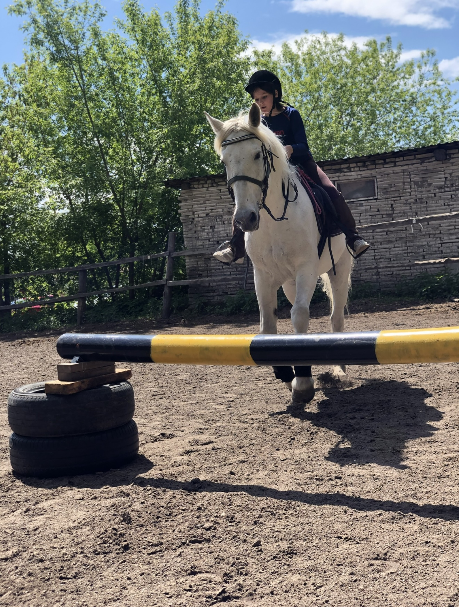
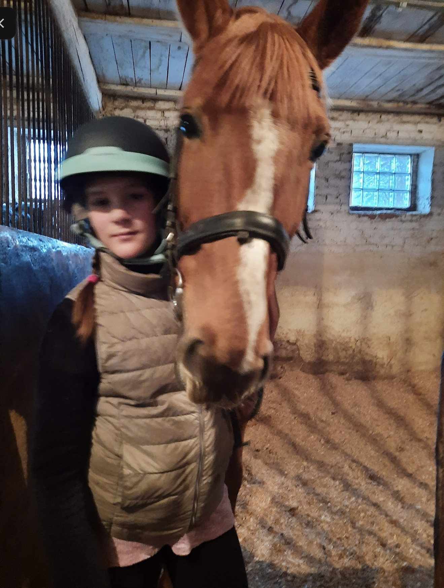
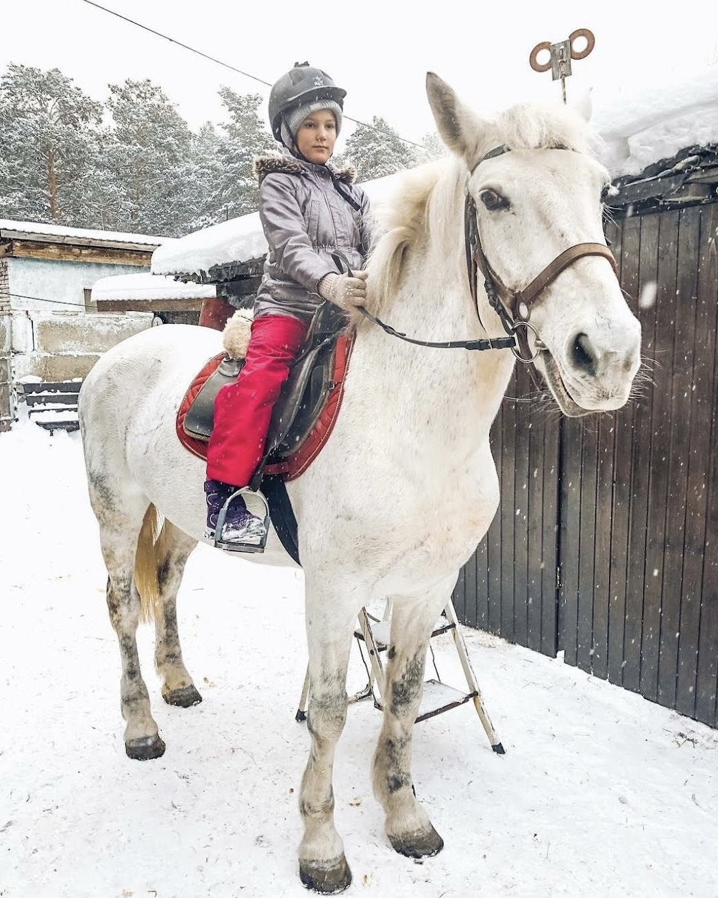
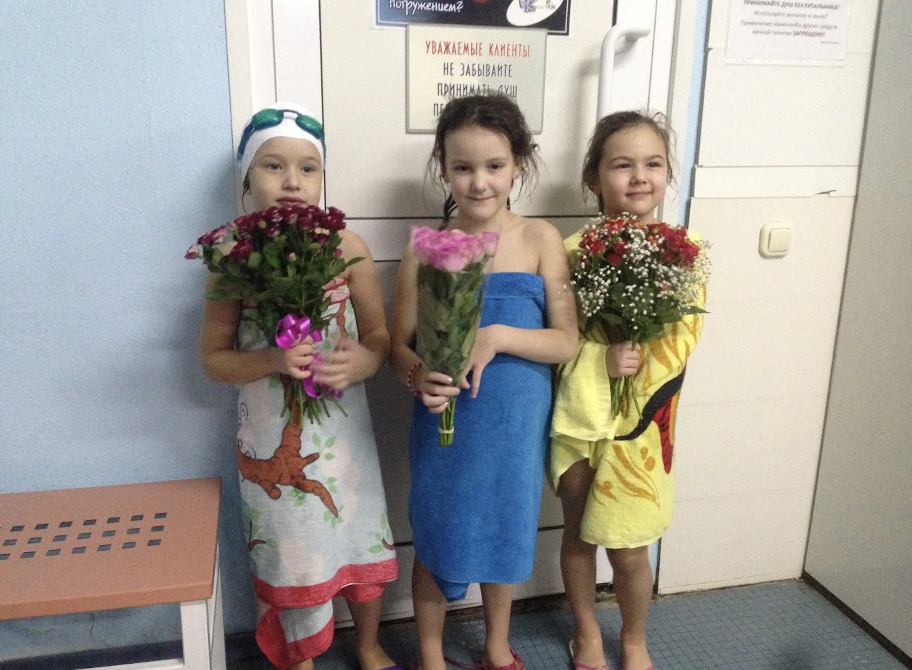
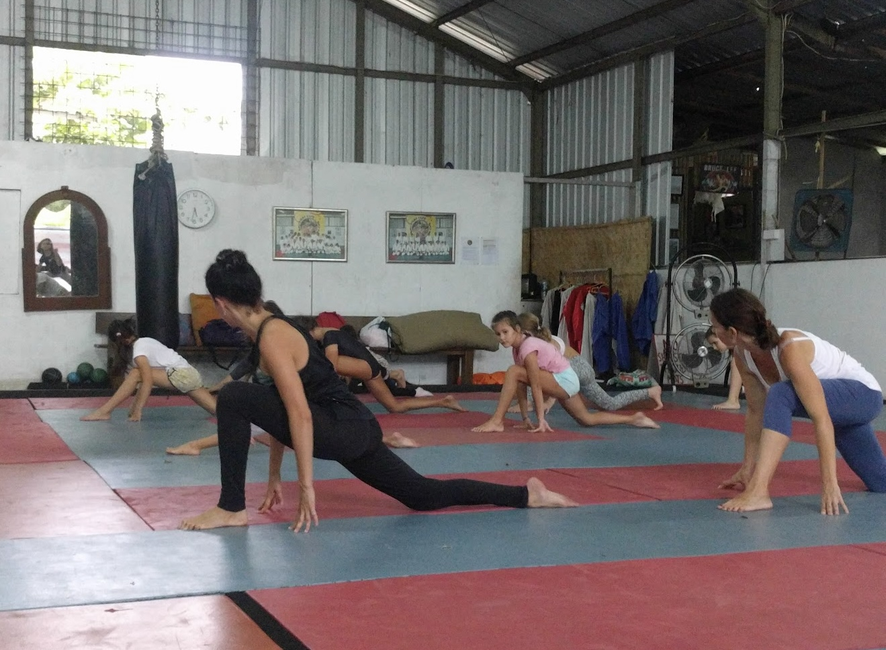

Iaroslava Ketiladze
High School Student
Exploring business, communication and global management through study, professional experience, leadership and international collaboration.
Open to meeting new people and especially interested in volunteering and internship opportunities.
Hi! My name is Iaroslava Ketiladze!
I am particularly interested in how businesses grow, brands gain influence, and people’s behaviour shapes their success, with interests spanning management, business, economics, communication, culture, and politics.
Through YMUN Dubai, professional experience in digital marketing and content management, and work for the global Italian brand Calzedonia, I have developed practical skills in diplomacy, cross-cultural communication, brand strategy and audience engagement.
Internships
Hero’s Journey — Alla Filina
Content Manager
- Managed the social media content calendar and maintained consistent publishing across multiple platforms.
- Designed visual materials and thumbnails for posts and videos, improving brand consistency and appeal.
- Engaged with the audience through comments and direct messages, fostering community and trust.
- Improved communication around online educational programs, supporting conversion and audience retention.
Orthodontist — Dr. Pronicheva
SMM Specialist
- Developed and implemented a client-attraction strategy for the orthodontist’s online presence.
- Built a recognizable digital identity and designed a cohesive visual concept reflecting professionalism, care and aesthetic precision.
- Created educational and lifestyle content that strengthened trust, engagement and visibility of treatment results.
- Contributed to an increase in consultations and stronger expert positioning in aesthetic dentistry.
Cosmetologist-Dermatologist — Dr. Panfilova
Social Media Visualizer
- Developed a visual strategy showcasing the expert’s 14 years of experience, precision and credibility.
- Created a consistent visual identity reflecting the expert’s personality and professional values.
- Structured content to highlight services and patient transformations and improve profile navigation.
- The new concept increased visibility and trust and was associated with 20% client growth within six weeks.
Calzedonia
Sales Consultant
- Delivered customer service in line with Italian and European retail standards for a global fashion brand.
- Developed communication skills through daily interaction with an international and multicultural clientele.
- Gained experience in visual merchandising, product presentation and brand-aligned client communication.
- Worked in a fast-paced retail environment, strengthening adaptability, responsibility and personalized customer service.
Education & Further Learning
Education
Georgian-American High School (GAHS), Georgia · 2022–2025
Advanced study of English and languages and preparation for the SAT exam.
Whitmore School · 2025–2027
Cognia-accredited online high school.
Total GPA across GAHS and Whitmore School: 3.933 / 4.0.
Media Production & Creative Leadership Program — by Nikolay Kartozia
Advanced program in media production, storytelling strategy, show development and audience psychology. Worked on concept creation, positioning and packaging of media projects with a focus on scalable formats and mass-audience impact.
Blogging Science: Reels and Global Blogging Practices — by Marina Mogilko
Practical training in short-form video, Reels structure, storytelling, editing and performance-based content optimization. Applied these skills to client projects to improve reach and engagement.
SMM? WHY NOT? — by Anna Boyko
Professional SMM program covering audience targeting, analytics, advertising tools, content calendars and brand communication, with hands-on work on real-world campaigns.
Science of Blogging — by Natalia Panfilova
Intensive program in marketing and SMM strategy, including audience analysis, content planning and brand positioning. The course became a foundation for further work in marketing and strategic content management.
Leadership & Activities
YMUN Dubai
Vietnam Delegate · UNHCR Committee
- Participated in an international Model United Nations conference, developing diplomacy, public speaking, negotiation and cross-cultural communication skills.
- Engaged in structured debates following United Nations procedures and worked with resolutions, policy discussions and decision-making processes.
- Represented Vietnam in the UNHCR committee, researching refugee-related challenges and presenting policy-based approaches to displacement, humanitarian response and international cooperation.
- Attended a Crimson Education lecture on global academic pathways and leadership development and collaborated with participants from diverse cultural backgrounds.
YMUN DubaiYMUN Dubai Instagram
Equestrian Sports School of Olympic Reserve
- Trained in competitive horseback riding four times a week, developing discipline, focus and physical endurance.
- Participated in individual and team training and prepared for regional-level competitions.
- Developed coordination, responsibility, confidence with animals, teamwork and a goal-oriented mindset.



Water Sports Palace — Basseyn Sgafkst
Gymnastics & running
- Completed gymnastics and running training to develop flexibility, stability and endurance.
- Used coach feedback to refine skills while maintaining consistent attendance and discipline.
- Participated in exhibition performances and first competitions, focusing on performance quality and teamwork.


Gym — Aspria Tbilisi
Maintained a consistent fitness routine for more than three years, strengthening self-discipline, stress management and long-term commitment alongside academic and extracurricular responsibilities.
Volunteer Experience
Independent Animal Rescue & Foster Care
- Rescued, fostered and rehomed animals in coordination with shelters, managed care plans and helped place animals into vetted permanent homes.
- Rescued a Red Book–listed endangered turtle found awake in a forest during winter and provided ongoing care and veterinary supervision until stabilization.
Oscar Hartmann Business Forum & Stand-Up — Unicorn Fellowship Tour
Event Volunteer
- Volunteered at an international business forum bringing together founders, investors and startup creators.
- Supported audience logistics, speakers, media teams and on-site communication.
- Trained and guided new volunteers, helping maintain event standards and smooth coordination across zones.
- Developed teamwork, adaptability and leadership while gaining exposure to modern entrepreneurial thinking and international business networking.
Oskar Hartmann InstagramOskar Hartmann Website
Outside the classroom
My interests include social sciences, foreign languages, zoology, business analytics and business strategy. I also work with AI technologies and creative tools including Figma, Lightroom, CapCut, Canva, Bazaart and Picsart.
Sport, volunteering and international projects have taught me to combine discipline with curiosity. I am especially interested in environments where business, communication and people from different cultures come together.
Languages: Russian — native · English — B2 · Georgian — A2.
Feel free to reach out!
I’m open to educational opportunities, international projects and conversations around business, communication and global management.
yaroslava@ketiladze.com+995 595 447 383 Tbilisi, Georgia